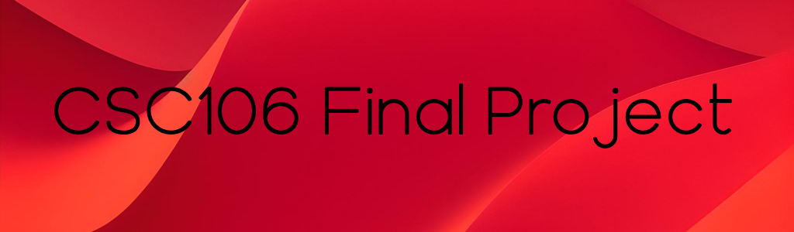

|
|
|
|  |
The program my partner and I created is a mock-up of flappy birds created in Khan Academy’s version
of javascript.
To use it, the user selects start. Once they have done so, they control a bird jumping
over pipes. The bird only has to jump over one pipe, but it respawns, and over time moves quicker.
If the bird comes into contact with a pipe, the game ends. The objective is to last as long as possible,
but as time goes on this becomes increasingly difficult.
To achieve this end, we used functions, variables,
objects, and arrays to make the game run properly and smoothly.
Final Flappy bird |
Welcome to our version of Flappy BirdIn this version of flappy bird, you are the red bird from Angry birds |